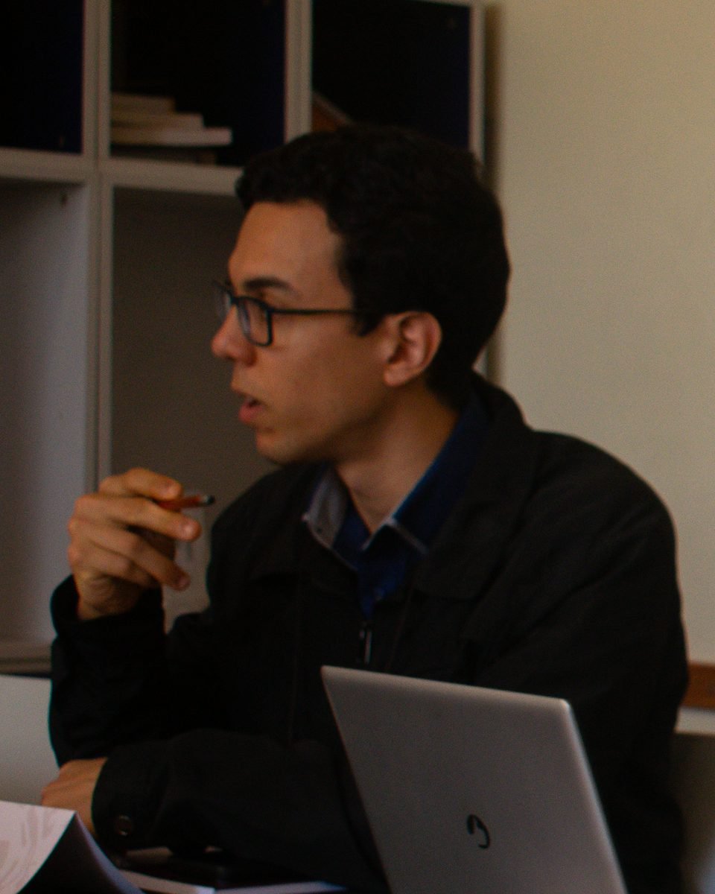

Aceleración de hardware, HPC y finanzas cuantitativas
Trabajo para que las redes neuronales cuesten menos de ejecutar en hardware real, desde CNN en FPGA hasta LLM en varias GPU, y construyo pipelines de datos de mercado e investigación de carteras con ML para acciones de Brasil y EE. UU.
Abierto aIngeniería de ML e investigación en IA · Investigación cuantitativa · HPC
Trabajo actual
Investigación · UFRGS · desde 2026
Kernels de 3×3 y 2×2 alternados: 24 % menos MAC, sin pérdida de precisión medible
Estudio de tamaño de kernel con 152 ejecuciones en Tiny ImageNet, más detección y segmentación en PASCAL VOC · FP32 → QAT → INT8 · ejecuciones en PCAD (Slurm)
Redes neuronales conscientes del hardware: cómo limitar los kernels de una CNN a los tamaños 2×2 y 3×3, que el hardware Winograd maneja bien, afecta la precisión, la eficiencia y la cuantización INT8. Bajo la dirección del Prof. Mateus Grellert, del Grupo de Microelectrónica de la UFRGS.
Contribución y aprendizajes
Cómo contribuyoLlevo el estudio de tamaño de kernel de principio a fin en PCAD, el clúster de HPC de la UFRGS, mediante Slurm: 152 ejecuciones en el estudio principal, más rondas de robustez e híbridas en Tiny ImageNet y PASCAL VOC, cada una entrenada en FP32, luego con entrenamiento consciente de la cuantización y después convertida a INT8.
Qué estoy aprendiendoA medir el ruido de la semilla antes de confiar en una diferencia: entre dos ejecuciones únicas, la semilla por sí sola mueve la diferencia entre 0,7 y 1 punto, así que todo lo que cae dentro de esa franja es un empate, y la mejor de 24 configuraciones tuvo que repetirse con dos semillas más antes de que confiara en ella. Más allá de lo técnico: mantener organizado y reproducible un estudio de 152 ejecuciones, y presentar los resultados a mi director con sus límites, no solo las buenas noticias.
Python
Deep Learning
Cuantización
HPC
Colaboración en investigación · UFRGS · desde 2026
Winograd de 4 bits en FPGA: cuatro productos por DSP, 1,98× el rendimiento de 8 bits
3379 GOPS en VGG16 con 1024 DSP (ZCU104) · la red de 4 bits que entrené: 68,51 % top-1 en ImageNet, 3,08 puntos por debajo de la versión en punto flotante
Aceleradores en Verilog para convolución 3×3 con el algoritmo de Winograd (F(2,3), F(4,3), F(6,3); INT8 y 4 bits), diseñados por mi compañero de laboratorio Thomas Schmitz; yo aporto el lado de la red y de la precisión. Coautor de un artículo invitado en IEEE OJCAS que amplía el artículo de Thomas en SBCCI 2026 (en preparación) y de un artículo en ISCAS en revisión.
Contribución y aprendizajes
Cómo contribuyoEvalúo las líneas de aceleradores de Thomas en 16 redes adaptadas a kernels 3×3 en una AMD Alveo U200: conteo de ciclos a partir de la simulación del netlist, Fmax y potencia de Vivado, y precisión con la aritmética del propio acelerador. Para el artículo de OJCAS entrené la red de 4 bits directamente en el dominio de Winograd (escalas por filtro, tres semillas), la llevé al RTL con bias y revisé los números y el texto del artículo.
Qué estoy aprendiendoUna ganancia aritmética es un techo, no rendimiento: tiles más grandes exigen datos más anchos y un cierre de timing más difícil, y los números de hardware solo cuentan cuando coinciden bit a bit con una referencia en software. Trabajar sobre el diseño de otra persona me enseñó a mejorarlo sin tocarlo: medir a través de su batería de pruebas, informar lo que falla y dejar que el diseñador decida.
FPGA
Vivado
Winograd
Cuantización
Proyecto individual · desde 2025
Datos de mercado point-in-time para B3 y ~9600 acciones de EE. UU., sin sesgo de anticipación ni de supervivencia
B3 desde 2000, empresas deslistadas incluidas · EE. UU.: 34 M de filas de precios, fundamentales de SEC EDGAR desde los años noventa, macro de FRED · investigación de carteras con LightGBM sobre esa base, en curso
Investigación con machine learning para la gestión de carteras en el mercado de acciones brasileño (B3): un pipeline de datos point-in-time y un estudio de construcción de carteras basado en LightGBM con backtesting walk-forward, que ahora se amplía a acciones de EE. UU.
Contribución y aprendizajes
Cómo contribuyoConstruí todo el pipeline: precios, fundamentales de la CVM con sus fechas reales de publicación, empresas deslistadas para evitar el sesgo de supervivencia y datos macro; luego un modelo de alfa LightGBM, un modelo de riesgo y un optimizador que tiene en cuenta los costos. Para la expansión a EE. UU. reuní precios de ~9600 tickers (34 M de filas), fundamentales de SEC EDGAR desde los años noventa y datos macro de FRED.
Qué estoy aprendiendoUna configuración elegida entre muchos backtests significa poco hasta que se corrige por pruebas múltiples (una prueba de Sharpe deflactado me lo mostró), y el sesgo de supervivencia y las fechas de publicación importan tanto como el modelo. Llevar solo un proyecto largo me enseñó a gestionarme: fijar mis propias metas, cambiar una variable por experimento y ser mi propio revisor, de modo que ninguna capa entra hasta que la de abajo supera su línea base.
Python
LightGBM
Validación walk-forward
Optimización de carteras
Trayectoria
Estudio Ingeniería de Computación en la UFRGS, una de las universidades más prestigiosas de Brasil, calificada en 2022 por el Ministerio de Educación como la mejor universidad federal del país. Antes estudié Ingeniería Eléctrica en la UFSC. Trabajo en la intersección entre hardware y machine learning: mi investigación actual busca que las redes neuronales se adapten mejor a los aceleradores de hardware. Debo gran parte de este trabajo a mi director, el Prof. Mateus Grellert, cuya orientación definió mi manera de investigar.
Fuera del laboratorio, construyo datos de mercado point-in-time e investigación de carteras con ML para acciones de B3 y EE. UU.
En la UFSC construí un escáner láser 3D para un proyecto de ROV de inspección submarina y trabajé en el equipo de la Shell Eco-marathon. Desde entonces lideré un equipo de tres en el desafío IBM SkillsBuild, construí un pronóstico de la temporada de incendios en el NASA Space Apps y, fuera de la ingeniería, participé en el UFRGSMUN, negociando propuestas y conciliando posiciones opuestas.
UniversidadUFRGS — Ingeniería de Computación
AntesUFSC — Ingeniería Eléctrica
IdiomasPortugués · Inglés · Francés · Español

Experiencia
LABMETRO · UFSC · 2025 · Visión + embebidos
Escáner láser 3D de bajo costo para inspección submarina, del hardware a la nube de puntos
Cámara, láser y espejo giratorio con encoder (Arduino) · extracción subpíxel de la línea láser · modelo de profundidad con gradient boosting · ROV financiado por la FINEP en la UFSC
VORIS (Vehículo Operado Remotamente para Inspección Submarina) es un proyecto financiado por la FINEP en el Laboratorio de Metrología y Automatización (LABMETRO) de la UFSC, con Petrobras como parte interesada: un ROV con sistemas ópticos de medición 3D para estructuras sumergidas. En mi investigación de grado, junto al Prof. Diego Fabre, construí y evalué su banco de pruebas de triangulación láser: una cámara, un láser y un espejo giratorio que barren una escena y la convierten en una nube de puntos 3D.
Contribución y aprendizajes
Cómo contribuíConstruí el sistema de principio a fin: el hardware (un Arduino Uno R4 que controla un espejo con motor paso a paso leído por un encoder absoluto, control PWM del láser y captura de imágenes sincronizada con el ángulo de barrido), la extracción subpíxel de la línea láser con un centroide ponderado por intensidad (mucho menos ruido que la umbralización), el modelo geométrico de triangulación (normalización de la cámara, geometría cámara–láser y corrección del ángulo del espejo), un modelo de regresión con gradient boosting entrenado con escaneos etiquetados para corregir errores sistemáticos de profundidad y una interfaz gráfica para operarlo todo.
Qué aprendíUn modelo vale lo que vale su calibración: la geometría era precisa cerca del centro de la imagen, pero pequeños errores de calibración y de ángulo del láser crecían hacia los bordes. Aprender esos errores a partir de los datos redujo los artefactos allí, pero solo hasta donde llegaban los datos de entrenamiento, lo que apunta a un híbrido con la geometría como base. Trabajar en el LABMETRO también me puso, como estudiante de ingeniería eléctrica, en un laboratorio de ingeniería mecánica junto a metrólogos e investigadores de visión por computadora, trabajando con profesores de distintas especialidades: aprendí a explicar mi subsistema en los términos de cada uno, a convertir sus críticas en mejoras del banco de pruebas y a cumplir el cronograma de un proyecto financiado.
Visión por computadora
Sistemas embebidos
Reconstrucción 3D
Machine Learning
Equipo de competición estudiantil · 2025 · Ingeniería + marketing
Compuestos de fibra de carbono en un prototipo ultraeficiente, y el marketing del equipo
Equipo de la Shell Eco-marathon · prototipos a gasolina y eléctricos · visita técnica a Nanopoxy (resinas epoxi)
El E3 (Equipo de Eficiencia Energética de la UFSC) diseña, construye y valida prototipos ultraeficientes a gasolina y eléctricos para la Shell Eco-marathon. Entré en 2025 y trabajé en la ingeniería del vehículo y en el marketing del equipo.
Contribución y aprendizajes
Cómo contribuíTrabajé sobre todo en la ingeniería del vehículo, con trabajo práctico en compuestos de fibra de carbono; participé en una visita técnica a Nanopoxy, fabricante de resinas epoxi para compuestos — la misma familia de materiales usada en el vehículo; e hice el marketing del equipo mientras organizaba el área de marketing.
Qué aprendíCómo la fibra de carbono y la resina epoxi se combinan en piezas livianas y rígidas y, en Nanopoxy, qué hay detrás de las propias resinas. Organizar el área de marketing implicó repartir tareas entre compañeros, fijar plazos y hacer seguimiento; hacerlo junto con el trabajo de ingeniería me obligó a priorizar y a explicar el lado técnico del vehículo en términos que personas ajenas a la ingeniería pudieran seguir.
Una aplicación web que combina las detecciones de incendios de NASA FIRMS de los dos sensores satelitales en una serie coherente y la convierte en un calendario mensual de quemas, con piloto en Rondônia y extendida a todos los estados de Brasil.
Contribución y aprendizajes
Cómo contribuíUno de los dos desarrolladores principales (67 commits). Construí las vistas de temporada de incendios y de “comparado con lo habitual”, la perspectiva de la próxima temporada con probabilidades de incendio por celda, el piloto nacional con los límites del IBGE y herramientas de campo (enlaces para compartir, “dónde actuar primero”, carga de áreas personalizadas). También probé un retador de ML, que no superó al método de proporciones, más simple, y escribí las pruebas del pipeline.
Qué aprendíLos datos satelitales deben conciliarse entre sensores antes de que cualquier análisis tenga sentido, y una línea base simple y explicable puede superar al ML; informarlo con honestidad es parte del resultado. El hackathon me enseñó a programar bajo presión: recortar el alcance temprano, entregar primero el núcleo, dividir el trabajo con claridad con el otro desarrollador principal, revisar rápido el código del otro y mantener pruebas para que la velocidad no rompa lo que ya funciona.
Python
JavaScript
NASA FIRMS
Geoespacial
Prototipo en línea · lideré un equipo de 3
Plan de conectividad óptimo según el presupuesto para los 5570 municipios de Brasil
VPN, payback y optimización de cartera · explicaciones de IBM Granite verificadas contra los números · 230 pruebas automatizadas
Sistema de apoyo a la decisión para el desafío IBM SkillsBuild & Fundação Telefônica Vivo: clasifica los municipios para la expansión de la conectividad con datos públicos (Anatel, IBGE, INEP), análisis financiero, optimización de cartera y un agente IBM Granite que explica cada recomendación.
Contribución y aprendizajes
Cómo contribuíLideré el equipo de tres que lo construyó y fui responsable del motor de decisión: los puntajes de prioridad de los municipios, las distancias de backhaul, la herramienta financiera (payback, VPN, sensibilidad), la optimización de cartera con PuLP/CBC (IBM CPLEX opcional) y un backtest 2021→2025. También lideré la integración: el backend en FastAPI, las verificaciones de que el texto de Granite coincide con los números del motor, la CI y el despliegue.
Qué aprendíCómo convertir una pregunta de negocio en un modelo de optimización con restricciones reales de presupuesto, y por qué la salida de un LLM debe verificarse contra los datos. Al liderarlo, aprendí a dividir el trabajo según quién dominaba mejor cada parte, a fijar temprano las interfaces y los datos simulados para que datos, motor e interfaz avanzaran en paralelo, y a tomar las decisiones finales cuando las piezas tenían que encajar antes del plazo.
Proyecto de la asignatura Evaluación de Desempeño de la UFRGS: compara el paralelismo de tensor y de pipeline para inferencia de LLM (vLLM y Ray) en PCAD, el clúster de HPC de la UFRGS.
Contribución y aprendizajes
Cómo contribuíMe encargué del lado de GPU y de red del análisis: telemetría de GPU (utilización, consumo de energía), mediciones de red, los notebooks y gráficos de análisis estadístico, los scripts de ejecución y las diapositivas finales.
Qué aprendíCómo diseñar un experimento de desempeño con factores y repeticiones, y cómo el paralelismo de tensor y el de pipeline desplazan el cuello de botella entre cómputo y comunicación. Ser responsable de una parte de un estudio en equipo me enseñó a acordar el plan desde el inicio, entregar datos que los demás pudieran usar directamente y planificar las ejecuciones según la cola de un clúster de HPC compartido.
Python
vLLM
HPC
Prototipo concluido · individual
Ordena una carpeta desordenada por significado, no por nombre de archivo
Embeddings de frases + KMeans · YAKE nombra cada carpeta · vista previa antes de mover nada
Organizador de documentos con IA que usa embeddings de frases, extracción de palabras clave y clustering KMeans para agrupar archivos por similitud semántica.
Contribución y aprendizajes
Cómo contribuíLo construí solo: extracción de texto de PDF, DOCX, TXT y XML más transcripción de audio sin conexión con Vosk, embeddings de frases con KMeans, palabras clave YAKE para nombrar cada carpeta y una vista previa antes de mover cualquier archivo.
Qué aprendíA aplicar NLP a archivos reales y desordenados, y que los clusters no supervisados solo sirven con etiquetas legibles. Construirlo solo me enseñó a reducir primero el alcance a un prototipo que funcione y a diseñar para la confianza del usuario: una herramienta que mueve archivos siempre debe mostrar una vista previa.
Python
NLP
Clustering
Contribución open source
Asistente de asignaturas con IA y pronóstico de graduación para estudiantes de la UFRGS
Pull request, no fusionado (el repositorio original ya no se mantiene) · Vue · endpoint de IA con límite de solicitudes · pruebas con Vitest
Pull request a una app open source de ayuda con la matrícula de la UFRGS, que añade funciones que eché en falta al usarla como estudiante.
Contribución y aprendizajes
Cómo contribuíAñadí un asistente con IA para preguntas sobre asignaturas y horarios (limitado a la carrera seleccionada, con CORS/CSP de producción y límites de solicitudes), un pronóstico de graduación con exportación a PDF, exportación del horario a .ics con comparación lado a lado, y configuré Vitest con pruebas para los servicios principales.
Qué aprendíCómo contribuir al código de otra persona: seguir sus convenciones, mantener un pull request enfocado y explicar por qué importa cada cambio para que el mantenedor pueda revisarlo rápido; y cómo añadir pruebas alrededor de código que no escribí.
Un Brick Breaker de estilo arcade hecho en C con Raylib: movimiento por teclado, detección de colisiones, vidas, puntuación, power-ups y varios niveles cargados desde archivos.
Contribución y aprendizajes
Cómo contribuíEscribí la mayor parte del código (32 de 38 commits): estados de juego modulares, colisiones, power-ups, niveles cargados desde archivos, partidas guardadas en binario con ranking de puntuaciones, audio y el HUD.
Qué aprendíA estructurar un programa en C en módulos y a manejar la memoria y la E/S de archivos a mano. Trabajar en pareja me enseñó a dividir el juego en módulos de los que cada uno pudiera hacerse cargo, acordar las interfaces entre ellos y usar Git para mantener nuestro trabajo sincronizado.
C
Raylib
Sistemas de juego
Actividades
Modelo de la ONU · 2026 · en inglés
Negocié políticas antiterroristas y de ciberseguridad; la prensa me eligió para una entrevista especial
Oficina de Lucha contra el Terrorismo de la ONU · terrorismo en el Sahel y ciberterrorismo · uno de los cuatro delegados entrevistados ante toda la conferencia
El Modelo de Naciones Unidas de la UFRGS. Como delegado de Israel en la Oficina de las Naciones Unidas de Lucha contra el Terrorismo (UNOCT), debatí en inglés sobre el terrorismo en el Sahel y el ciberterrorismo, negociando con delegaciones cuyas posiciones a menudo estaban lejos de la mía.
Contribución y aprendizajes
Cómo contribuíPara prepararme, seguí de cerca las noticias sobre ciberterrorismo, ciberseguridad y el Sahel. En el comité representé a Israel y negocié en caucus con otras delegaciones la redacción de las medidas antiterroristas, cediendo donde costaba poco y manteniéndome firme en los puntos a los que Israel no podía renunciar. El equipo de prensa me eligió como uno de los cuatro delegados para una entrevista especial ante todos los participantes, donde defendí la posición de mi delegación y respondí a una pregunta crítica de los periodistas.
Qué aprendíLos acuerdos surgieron de entender por qué cada delegación sostenía su posición, no de repetir la mía. Aprendí a trabajar con delegaciones cuyas visiones estaban lejos de las de Israel, a negociar redacciones que varias partes pudieran aceptar, a formar un bloque en torno a un texto común y a defender en público una posición difícil, en inglés, sin perder precisión. La preparación también se volvió un hábito: sigo la ciberseguridad y la geopolítica a diario, desde nuevos ataques y vulnerabilidades hasta conflictos regionales y los debates de seguridad en torno a ellos, porque un argumento solo se sostiene cuando refleja el panorama actual.
Diplomacia
Negociación
Oratoria
Ciberseguridad
Stack y contacto
Habilidades
Sistemas y aceleración
C
C++
CUDA
FPGA (Vivado)
vLLM
Ray
Slurm (clúster PCAD)
ML y datos
Python
PyTorch
Cuantización (QAT/INT8)
Deep Learning
Aprendizaje por refuerzo
LightGBM
Visión por computadora
NLP
Ingeniería de software
FastAPI
Vue
React
TypeScript
JavaScript
Node.js
Express
Tailwind CSS
Firebase
Docker
Git
Idiomas
Portugués (nativo)
Inglés (fluido)
Francés (avanzado)
Español (avanzado)
Contacto
Hablemos.
Abierto aIngeniería de ML e investigación en IA · Investigación cuantitativa · HPC

 Investigación · UFRGS · desde 2026
Investigación · UFRGS · desde 2026